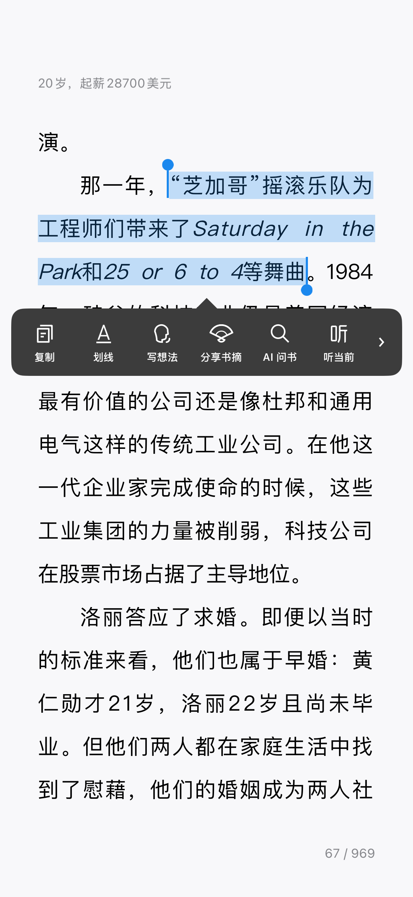
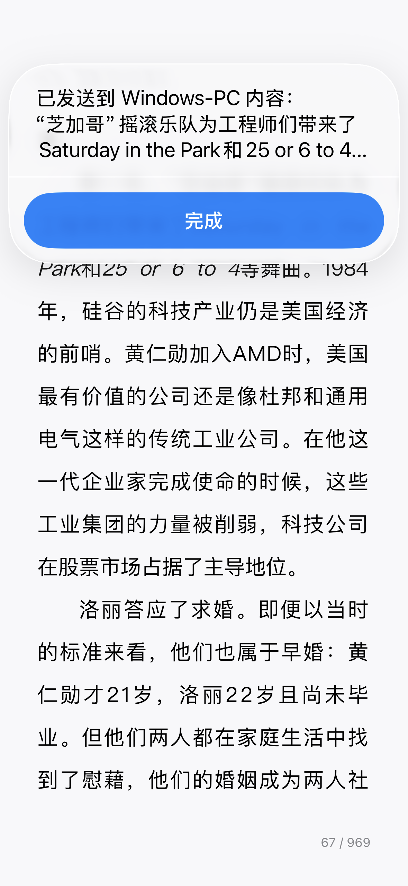
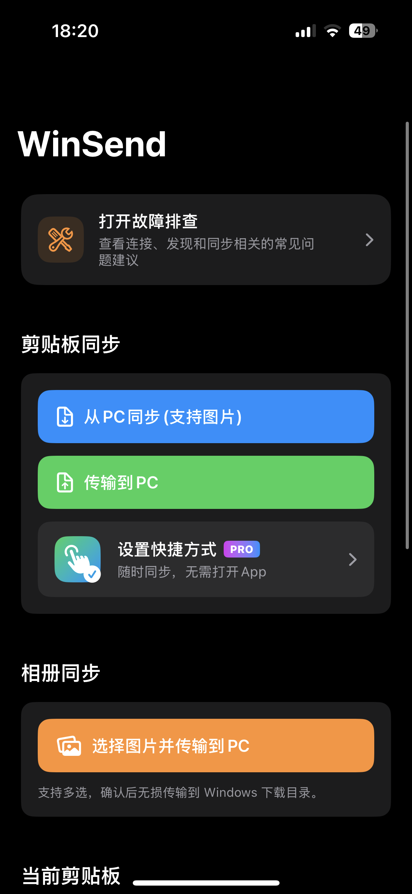
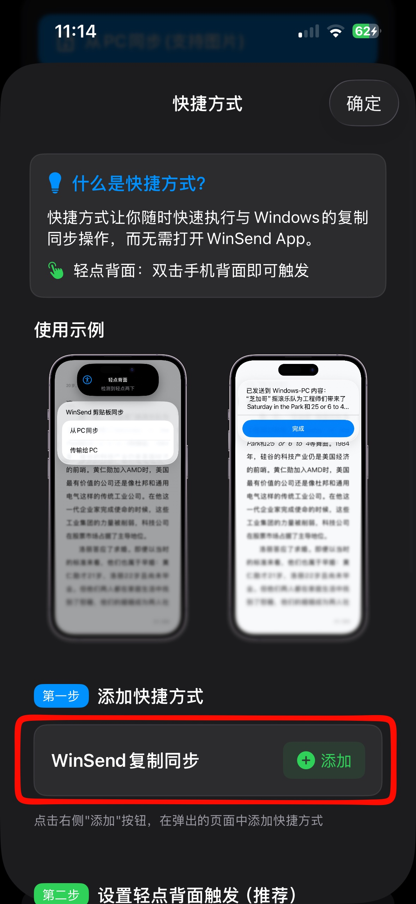
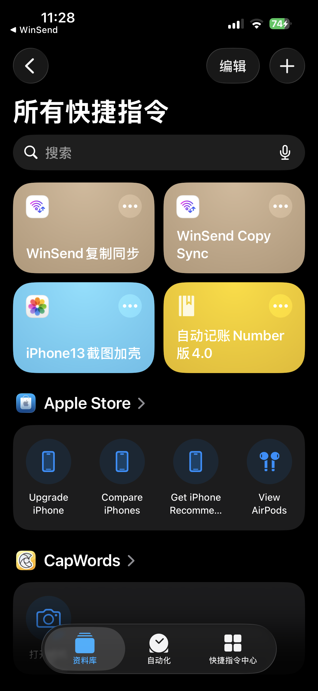
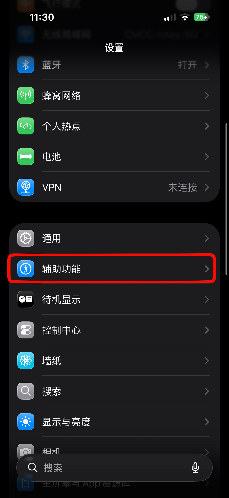
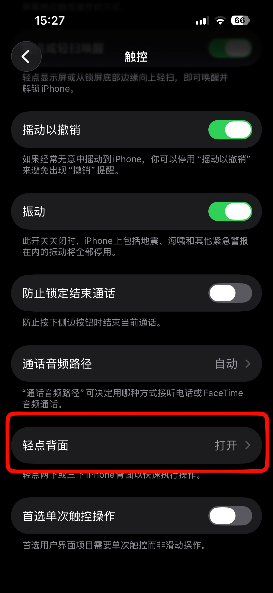

通过iPhone的快捷方式+轻点背面的触发方式，WinSend实现了最接近系统级体验的iOS与Windows的跨系统数据同步。
WinSend实现了无需打开App，就可以和Windows进行剪贴板的复制传输。这是WinSend区别于传统的LocalSend等老牌传输软件最智能化的特色功能之一。
传统的传输软件，都需要打开App才能实现传输任务，无法做到像AirDrop一样无感的丝滑复制同步。
我们做到了只要轻点两下手机背面，就可以在任何App中，实现复制同步。这是目前最接近于AirDrop的传输功能。
实际使用效果
下面用一个实际的例子作为展示
在任意 App 中复制一段内容


双击手机背面

选择同步到 Windows

同步成功

这样，在 Windows 设备上直接使用 Ctrl + V，就可以粘贴刚才在 iPhone 上复制的内容了。
详细设置教程
一次安装，随时使用
第一步：安装 WinSend iOS 端和 Windows 客户端
先确保 iPhone 与 Windows 端都已经完成安装，并能在同一网络环境中正常运行。
安装流程可以参考：WinSend 安装与配对设置
第二步：打开 WinSend App，进入设置快捷方式页面


第三步：添加快捷方式
按照 App 内提供的入口完成快捷方式的添加，您可以在快捷方式App中查看。


第四步：设置背面双击 / 三击触发
把刚添加好的快捷方式绑定到 iPhone 的“轻点背面”功能。建议优先尝试双击，如果担心误触，也可以改用三击。




为什么这套方式更接近系统级体验
因为它把“打开 App 再发送”的动作，改造成了“复制后直接触发”的动作。对于高频传输短内容的人来说，这种差异会非常明显。
如果您对iOS快捷方式的感兴趣，可以继续看 WinSend 如何工作。